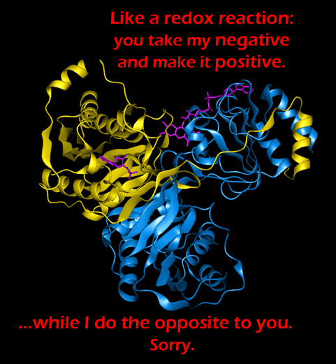

Comic JK 281
When I Feel Like It
⇤
<
?
>
⇥

⇤
<
?
>
⇥
Forum
.
RSS
.
Digg
.
Facebook
.
Reddit
.
Twitter
.
Stumbleupon
Enter your thoughts on number 281 here. Please, no spamming, trolling, or phreaking. I do this to your mother all the time but for some reason she keeps coming back for more. That looks like a protein to me, but which one, I wonder? A protein performing a redox reaction I would guess that it's some kind of oxidase, given the joke. Hmm, kinda reminds me of a certain friend of mine recently. Strictly platonic, but all the baggage :p. >Same. Although my feelings recently became unplatonic, which is shit. >>Only a good thing if the unplatonicness is mutual. In my case, the one time I tried asking her out, she got confused. (And being a guy of similar age, the source of confusion isn't obvious.) >>>that is sad :(.. i hate it when that happens. ive got a platonic one thats grown on my part.. will see how things go after exams. seeing her every day for next few weeks to study.. wish me luck anonymous website readership Awwww...That's sad. :( And this is why we should never, ever mds. >Well said. >>Dr Frankenstein tried to make a friend, and look what happened... :| Every problem can be solved by applying a voltage! >Re: The experiment at the beginning of Ghostbusters. >>Just don't cross the beams >>>streams, not beams... and that occurs much later, not at the beginning >>Pfft! What's the worst that could happe...